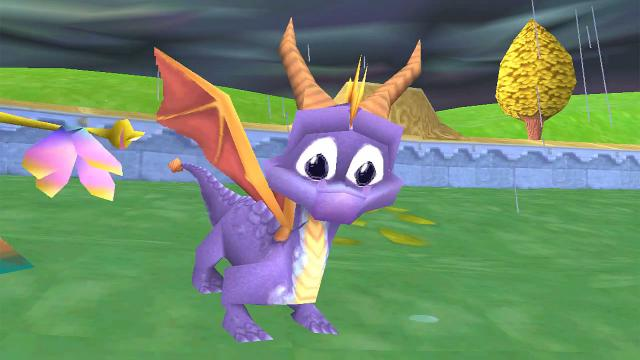
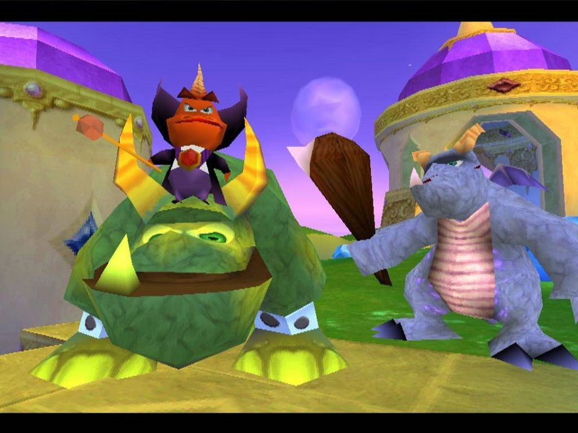
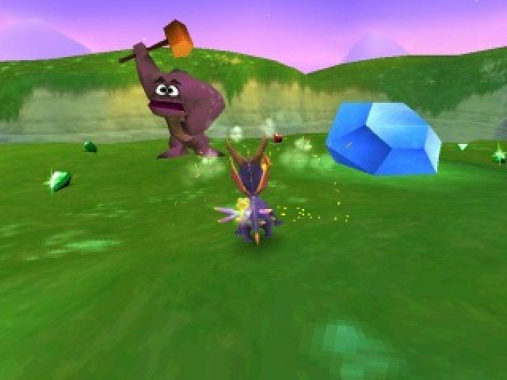
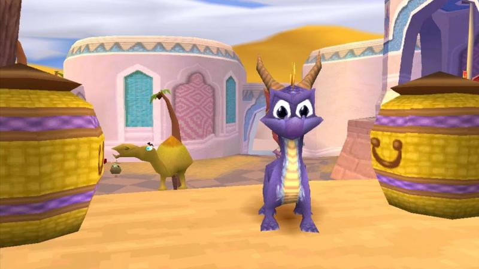

Game Zone
Welcome to Game Zone

Spyro 2: Ripto's Rage!
|  |  |
|  |  |
El juego fluye de una manera muy similar al Spyro original, con pocas variaciones en el control y las habilidades principales de Spyro. Spyro puede atacar a los enemigos con su típico aliento de dragón o con una embestida con sus cuernos. Las diferentes variedades de enemigos hace que se requiera uno de estos ataques específicamente para derrotarlos. Los enemigos blindados con metal son inmunes al fuego de Spyro, y los enemigos mucho más grandes que Spyro son inmunes a su ataque de carga. Mediante el uso de sus alas Spyro puede planear y puede ampliar su distancia de planeo hasta un alcance considerable, dependiendo de la elevación con la que el jugador comience a planear. A diferencia del juego anterior, Spyro podrá nadar sin ahogarse en agua limpia y solo se ahogará si el agua está contaminada. Los niveles han sido diseñados para tomar ventaja de estas habilidades: existen grandes lagunas que Spyro tiene que atravesar nadando por debajo de la superficie o planeando desde un punto elevado. Mientras el juego progresa, el jugador puede comprar nuevas habilidades para Spyro (lo que es obligatorio para llegar al final), tales como la capacidad de bucear, subir escaleras/trepar paredes y un golpe de cabeza al suelo. Además de las nuevas habilidades de Spyro, muchos niveles en el juego tienen estaciones especiales que dan temporalmente a Spyro capacidades mejoradas que le permiten derrotar a algunos enemigos, llegar a nuevas áreas, o completar ciertas misiones. Las estaciones de poder están en principio momento inactivas, pero se vuelven disponibles una vez que el jugador ha derrotado a un número determinado de enemigos en el nivel. A diferencia del primer juego los enemigos ya no están hechos con gemas y las liberan al morir, sino que sus espíritus se liberan al derrotarlos y van hacia las estaciones de poderes. Todos los adversarios deben ser eliminados de nuevo si se deja el nivel. Entre las estaciones de poder nos encontramos con la de supervuelo, superllama, superembestida, supersalto o superproteccion contra lava y agua contaminada. Incluso existe una estación que combina el supervuelo con la superllama. Además, completando el 100% del juego se le da a Spyro el poder de superllama de forma permanente.
Noticias

We add new free website templates frequently.
You can remove any link to our websites from this template you're free to use the template without linking back to us.

This is just a place holder so you can see how the site would look like.
The template is designed by free website templates for you for free you can replace all the text by your own text.
Play Now


Template Beauty
If you're looking for beautiful and professionally made templates you can find them at Template Beauty.